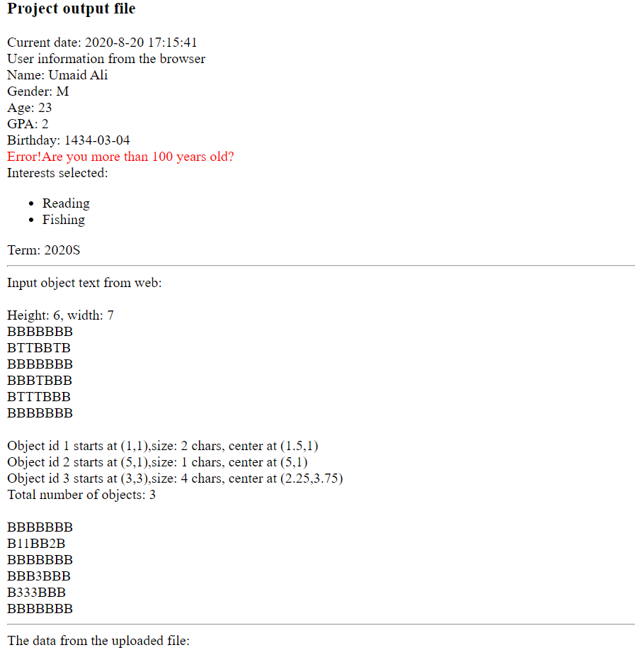

C++ program
This program will receive input values from Html form and print it on browser.
This program will also Validate the inputs and show the corresponding error message in red color.
This program will handle different numbers of height and width read by txt file
No global variables used in this C++ program
A same recursive function is used to detect the 4-connected objects for both input from web and upload file data. The recursive method have these arguments – array data, position, const ‘T”, const width, const height, object struct and object count. The array and position used call by value, “T” is a constant, and object struct and object count used call by reference. The char “T” should be replaced with the object id after it is visited.